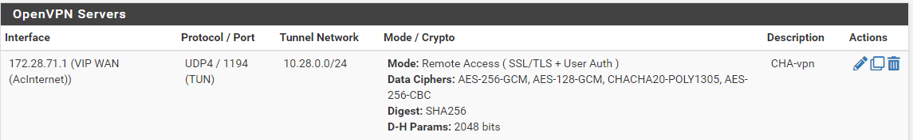
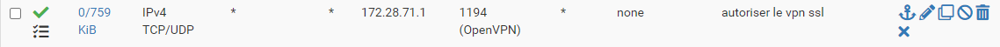
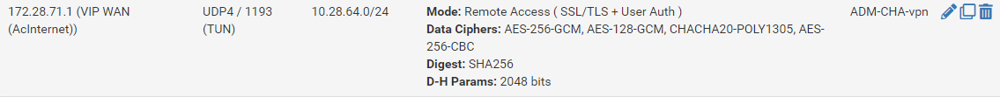
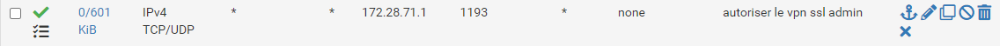
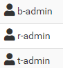

Configuration des VPN
Sur le PFsense
Configuration du VPN Utilisateurs
suivi du tuto de IT connect
⚠️ Notre réseau utilise 2 pfsense donc lors de la configuration de la règle wan il faut préciser la VIP 172.28.71.1
ainsi que dans la configuration du serveur VPN mettre l'accès VPN sur celle ci ⚠️
Serveur VPN pour les utilisateurs écoute le port 1194 
règle de filtrage pour le port 1194

Configuration du VPN Admin
Serveur VPN pour les administrateurs écoute le port 1193 
règle de filtrage pour le port 1193

création d'utilisateur admin
